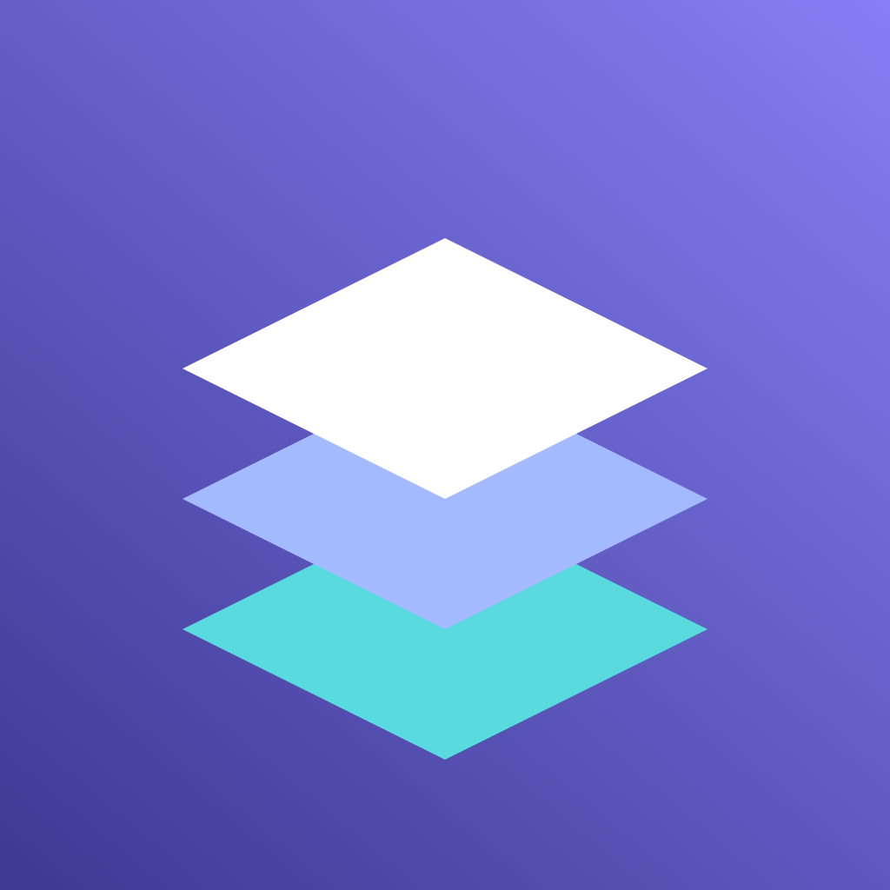
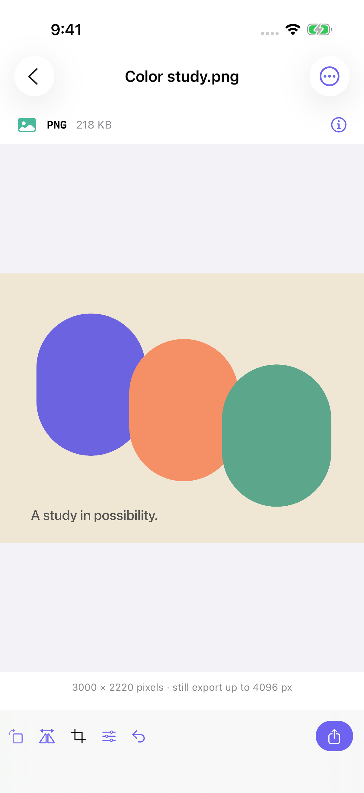

A familiar file workspace
Import from Files, connect a folder, search, sort and favorite. Keep recent files close and find finished work in Exports.

PrismYour all-in-one home to view, edit and convert media, images and documents. Expand what you can do when a built-in preview isn’t enough.

Play supported MKV and WMV videos, listen to FLAC and Ogg audio, inspect a WebP image, or edit Markdown and an Excel worksheet. Then convert supported files into familiar formats for Apple’s built-in apps and your next task.
Import from Files, connect a folder, search, sort and favorite. Keep recent files close and find finished work in Exports.
Adjust images, annotate and rearrange PDFs, edit Markdown source and worksheet cells, or trim supported media. Contextual controls follow your selection.
Choose a supported output, convert locally, then share to Files, Photos or another app. Edited exports and conversions create new copies.
Prism doesn’t operate a media upload service. Viewing, editing and conversion happen locally, with no advertising or third-party analytics SDK.
Read the privacy policy →Use a focused workspace on iPhone and a spacious browser beside your selected file on iPad. Choose system, light or dark appearance.
Read EPUB books, extract ZIP archives, browse SQLite databases and inspect STL models alongside your everyday media and documents.
Viewing, playback, file management and ZIP extraction are free. Try editing tools and 3 successful edited exports or conversions per installation.
$2.99
USD per month · auto-renewing
Pro features and updates while subscribed.
$14.99
USD per year · auto-renewing
Pro features and updates while subscribed.
$39.99
USD · one-time purchase
The same Pro features and future Pro updates.
Every Pro option removes the export count limit on supported edits and conversions. Prices are localized by Apple and confirmed in the app before purchase.
No. Filename extensions can contain different codecs and variants. See the in-app Format guide for routed formats, read-only viewers and editing limits. Encrypted or DRM-protected files are not supported.
Prism supports cell value editing in supported XLSX workbooks and exports an edited XLSX copy or the selected sheet as CSV. It is not a full spreadsheet calculation engine. Formula results use cached values; protected, signed and macro-enabled workbooks are read-only.
Video conversion supports SDR up to 1080p, and audio conversion supports mono/stereo. HDR conversion, surround downmix and OCR are outside this version. Image and document size limits protect device memory. Conversion may omit extra tracks, subtitles, metadata and formatting depending on output.
Use the same Apple Account, open Prism Pro from Browser options and choose Restore Purchases. An active subscription or lifetime purchase works on compatible iPhone and iPad devices.